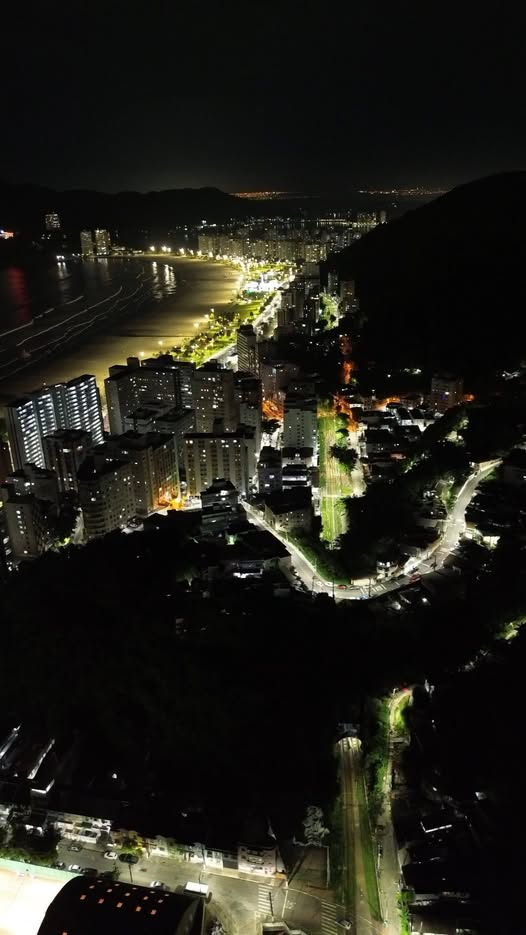

A data de fundação de São Vicente, 22 de janeiro de 1532, marcou a chegada de Martim Afonso de Souza ao sudoeste da ilha de mesmo nome, chamada pelos índios de Engaguaçu (do tupi-guarani, "baía-grande"). Inúmeras referências históricas, entretanto, assinalaram a presença de um povoado anterior, próximo ao porto conhecido por Tumiaru, que em tupi-guarani significa "fogo solitário ou farol", alusão ao costume europeu de acender uma fogueira para orientar as embarcações que se aproximavam de um porto. Alguns membros das tripulações estabeleceram-se nesse antigo povoado de São Vicente, como Gonçalo da Costa, Mestre Cosme Fernandes, João Ramalho, entre outros. Martim Afonso foi o responsável pela colonização oficial de São Vicente e pela sua elevação à categoria de vila, a primeira do Brasil. Logo ao desembarcar, começou a organizar a administração da colônia, tratando de edificar a Casa do Conselho, a igreja dedicada a Nossa Senhora da Assunção, o pelourinho, o fortim, o estaleiro e mais casas que abrigassem colonos e funcionários. Além do escambo inicial e da extração de pau-brasil, o núcleo desenvolveu-se graças ao plantio da cana-de-açúcar. Em suas terras foram plantadas as primeiras mudas trazidas
da Ilha da Madeira, e construído o Engenho do Trato ou do Governador, mais tarde denominado Engenho de São Jorge dos Erasmos. Várias foram as dificuldades enfrentadas pelo povoado, sobretudo os ataques de indígenas e de corsários. O primeiro combate foi travado com os tamoios, que se opunham à fixação dos novos habitantes. Foi necessária a presença de João Ramalho, vindo com Tibiriçá, da Borda do Campo, para auxiliar no controle dos índios. Outro grande embate estabeleceu-se com o espanhol Ruy Moschera que, depois de saquear o porto e pilhar vários armazéns, fugiu para o sul. No ano de 1542, novo desastre abateu a cidade, desta vez provocado pelo mar, que destruiu grande parte das construções, incluindo a matriz, a Casa do Conselho e a cadeia. Refazendo-se aos poucos, a vila continuou sofrendo ataques e saques de corsários como o de 1591, promovido pelos piratas enviados pelo inglês Cavendish, ou o de 1615, comandado pelo holandês Joris van Spilbergen. São Vicente, transformada em município em 29 de outubro de 1700, perdeu sua posição de destaque na região, com a expansão da cultura cafeeira no planalto, fase em que Santos tornou-se o principal porto exportador do País. No século XX, estabeleceu-se como cidade turística e pólo industrial.
Fonte: Fundação SEADE - 2006